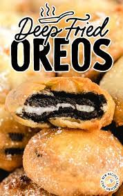

Deep Fried Oreos

Description
A deep-fried Oreo is a dessert or snack consisting of a chocolate sandwich cookie which is dipped in batter and deep fried. It may be served with different toppings, most commonly powdered sugar.
Ingredients
- Vegetable Oil (for frying) + 2 tsp (for batter)
- Oreos
- 1.5 cups Pancake Mix
- 1 Egg
- 1 cup milk
- Powdered Sugar
Steps
- Heat oil in fryer to 375°F.
- In a medium bowl, whisk oil egg, and milk together.
- Stir in pancake mix and mix until there are no more clumps.
- Dip Oreos in batter with a fork and then place in hot oil. Fry until golden brown (it took about 2 minutes).
- Place Oreos on a paper towel-lined plate
- Sprinkle with powdered sugar and ENJOY!